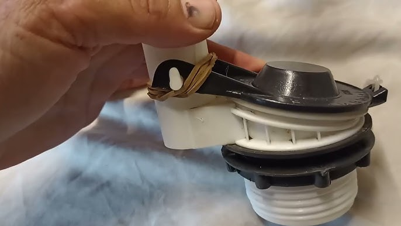
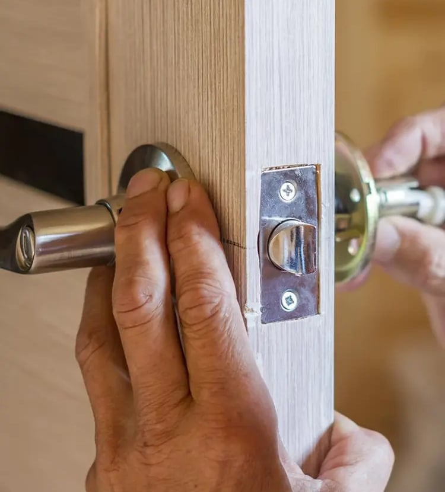
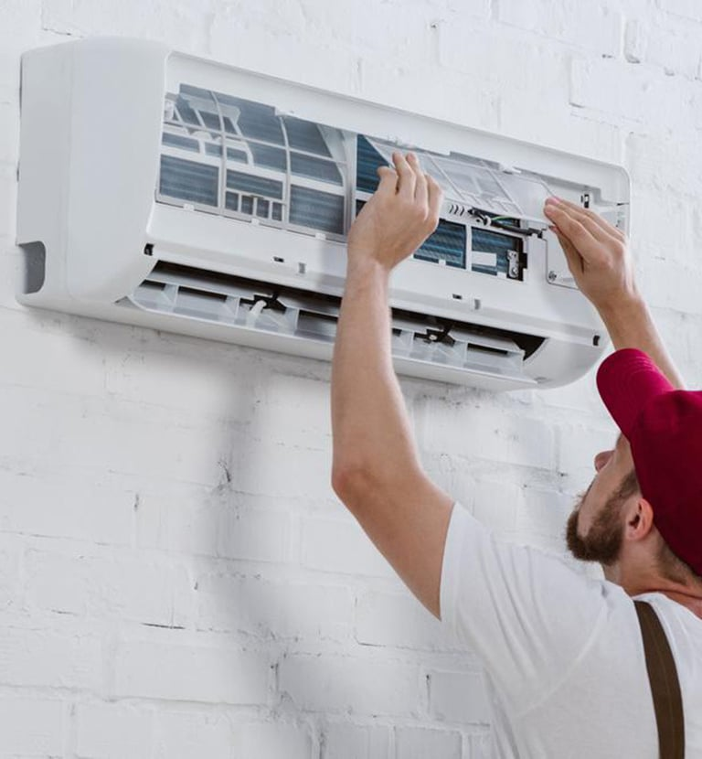
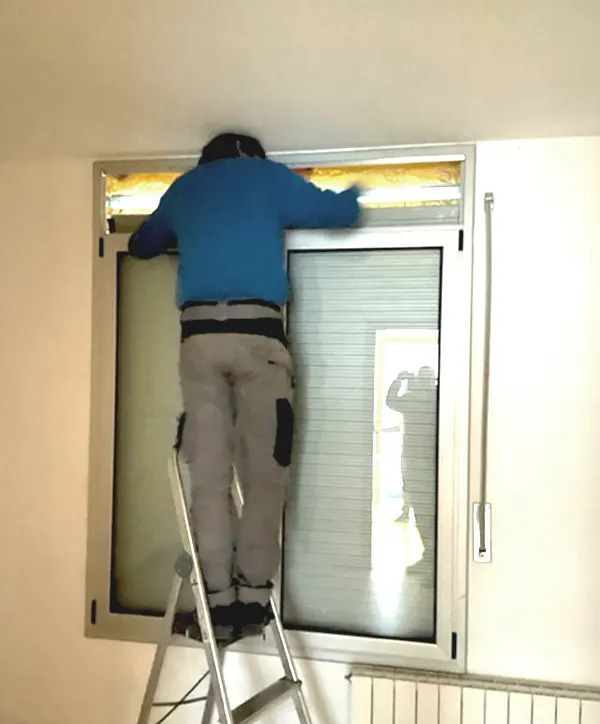

Aprende a detectar averías, ahorrar dinero y saber cuándo llamar a un experto: fontanería, electricidad, desatascos, cerrajería, calefacción y aire acondicionado. Publicamos contenido nuevo para ti.

Fugas, humedades, bajas de presión, ruidos en las tuberías... Te enseñamos a detectarlas a tiempo.
Leer artículo ›
Los fusibles saltan por un motivo. Aprende a identificar el problema antes de que sea grave.
Leer artículo ›
Barrera de vapor, aclimatación de la madera, clavado ciego... Todos los secretos del instalador.
Leer artículo ›
Agua hirviendo, bicarbonato, vinagre y el émbolo: los trucos caseros que funcionan antes de llamar al profesional.
Leer artículo ›
Las señales de que tu caldera está agotada y los trucos para gastar hasta un 30% menos de gas.
Leer artículo ›
Qué hacer y qué NO hacer para abrir la puerta sin romper nada y sin pagar de más.
Leer artículo ›
Temperatura ideal, filtros limpios y modo ECO: enfría tu casa gastando mucho menos.
Leer artículo ›
Precio por m², tiempo de obra, licencias y cómo elegir buena empresa: lo más buscado en Google.
Leer artículo ›Montaje de muebles, colgar cuadros, pequeños arreglos y carpintería: todo en una llamada.
Leer artículo ›
Persiana atascada, cinta rota o ruido raro: causas, trucos y cuándo conviene motorizar.
Leer artículo ›Llámanos: te atendemos 24h-365 días. Presupuesto a domicilio y sin compromiso.